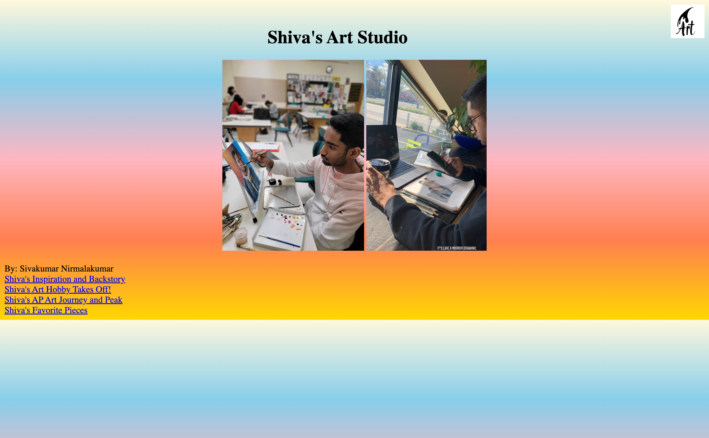
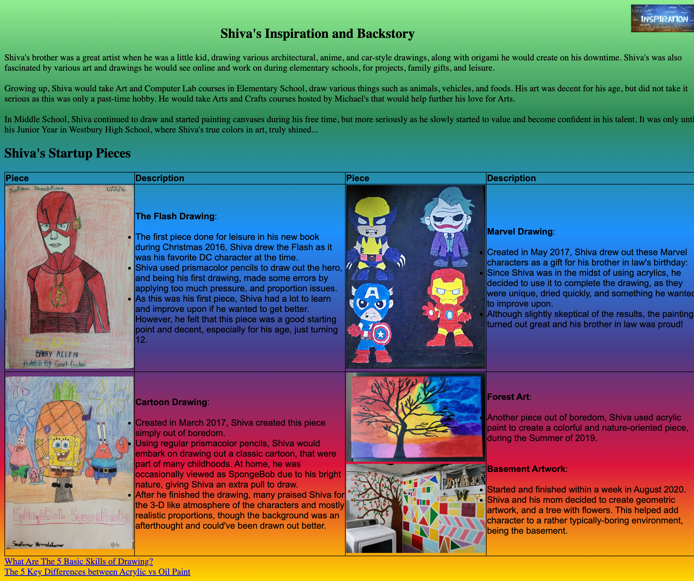
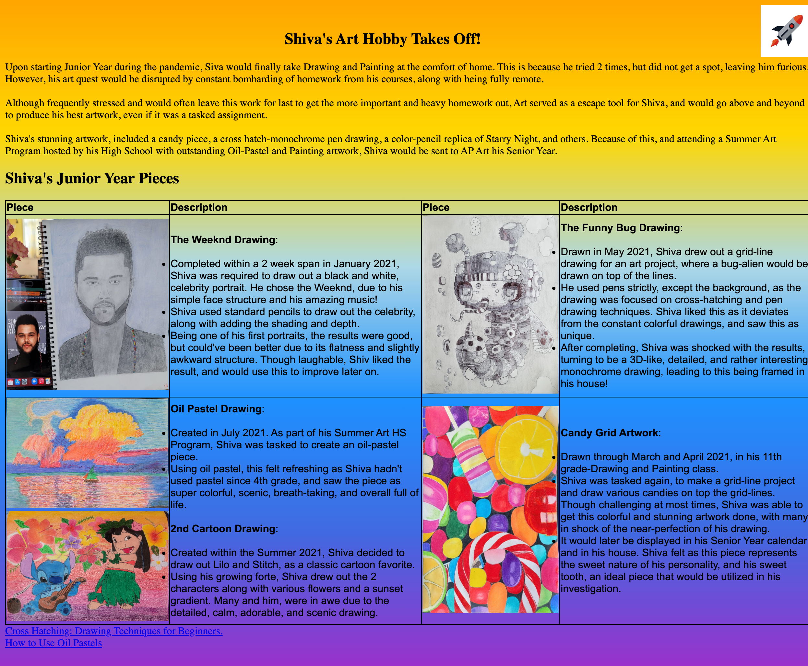
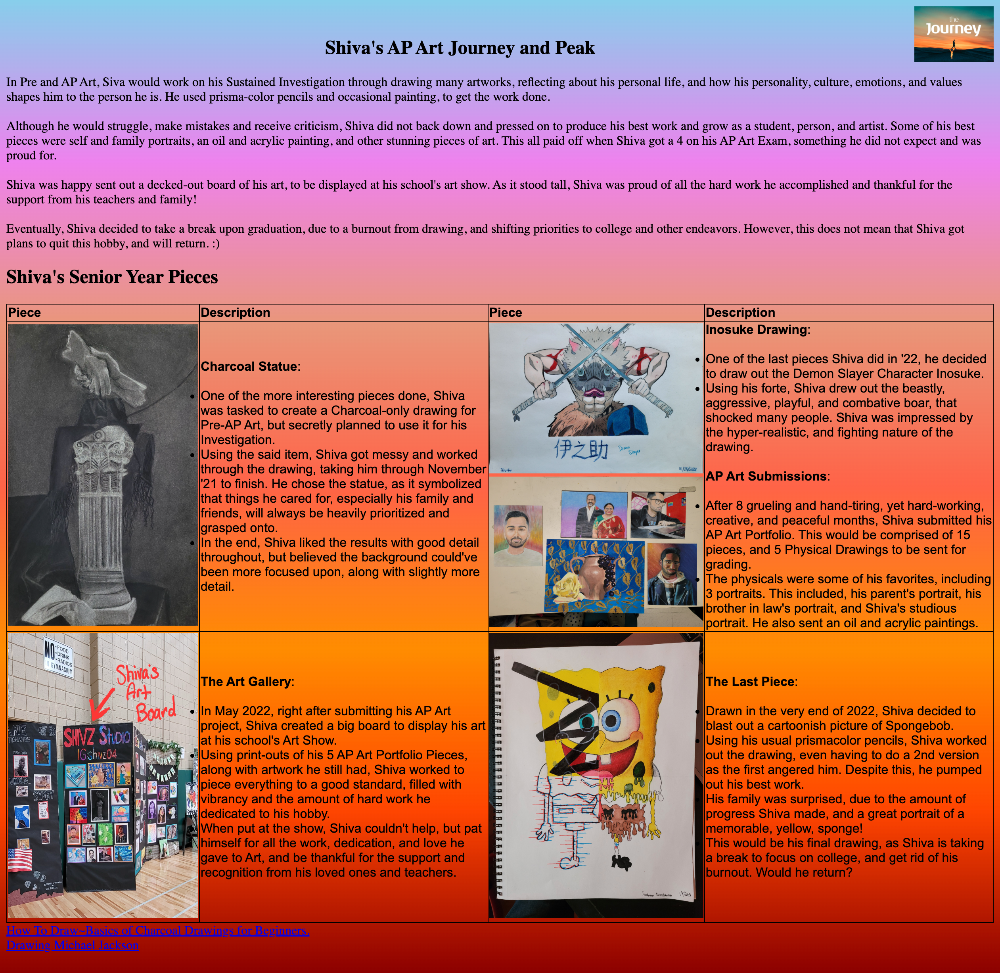
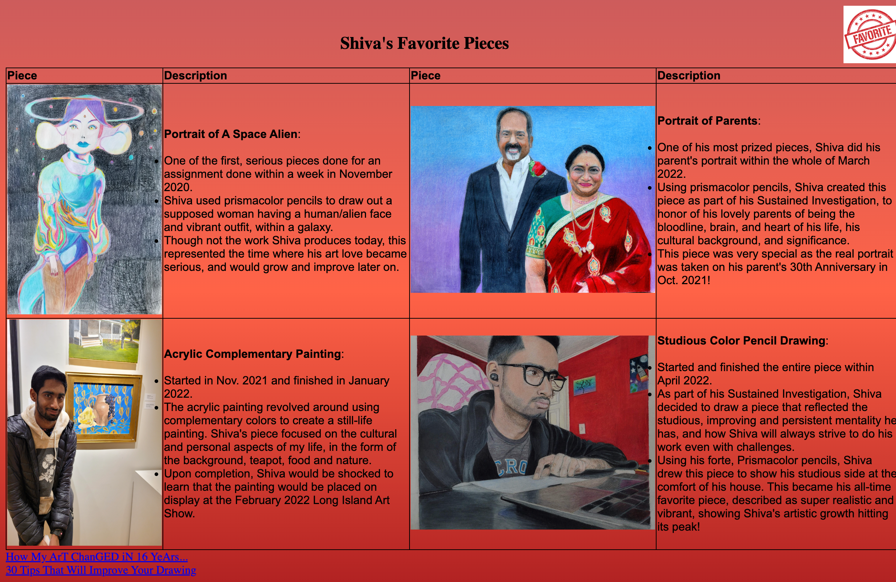

When I started college, I took an I.T. Intro 101 Course, where I was assigned a web programming project.
Fun Fact: When I made this project, this really wasn't a website. More so, this was a collection of HTML Pages that I opened individually from my computer.
Below are all the pages to my very first HTML Project I did back in Nassau CC in Fall 2022!
I've also included buttons to view each of their modern counterparts!

As seen above, the page does not fill the whole screen, with no proper navigation system.
Click to View the New Index
This was at a time where I had ZERO programming or web development knowledge.
Click to View the New 1st Page
The table-esque setup may have been functional, but was very clunky and sort of warpy.
Click to View the New 2nd Page
Too crazy of a background, with a bumpy sunset gradient.
Click to View the New 3rd Page
Looking back, this was probably the cleanest and least messy looking page.
Click to View the New 4th Page